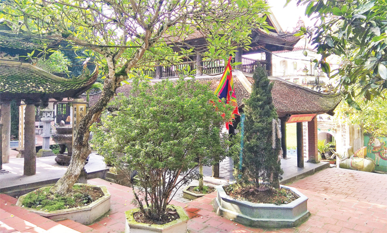

Đền Sái nằm trên đỉnh ngọn Thất Diệu Sơn, giữa cánh đồng tiếp giáp với huyện Yên Phong (tỉnh Bắc Ninh), cách di tích Cổ Loa 15 km về phía bắc. Đền Sái thờ đức Huyền Thiên Trấn Vũ, tương truyền khi xưa là người giúp Vua An Dương Vương diệt trừ tinh gà trắng để xây thành Cổ Loa. Để ghi nhớ công ơn của người, nhà vua cho xây dựng ngôi đền này.